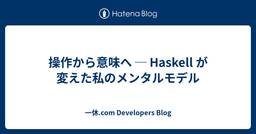
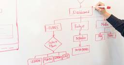
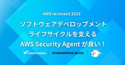
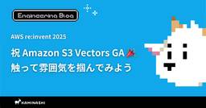
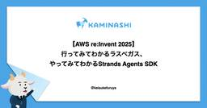

直近1週間の人気フィード
はてなブックマーク数を元に新着優先で並べ替え

GitHub のマージ方式を人間に毎回選ばせるのは、もうやめよう（やめた） 161
161 エムスリーテックブログ
エムスリーテックブログ
エムスリー Advent Calendar 2025 4 日目の記事です。 クラウド型電子カルテのデジカル開発チームで色々なことをやっている井上 (@wtr_in) です。一年を通して伊藤園の天然ミネラル麦茶を愛飲していますが、最近どうも味が変わった気がしています。（しませんか？） さて、すでに当ブログでも過去に何人か記事を書いていますが、弊社では GitLab Server から GitHub Enterprise Cloud への移行を進めています。 www.m3tech.blog デジカルチームでもリポジトリごとに順次移行を進めていますが、その際に GitHub Actions を使って…
3日前

操作から意味へ ─ Haskell が変えた私のメンタルモデル 43 一休.com Developers Blog
この記事は一休.com Advent Calendar 2025の 5日目の記事です。 私は毎年この時期になると Haskell に関する記事を投稿していますが、今年もまた Haskell を題材にしつつ、今回は Haskell を使うことがプログラミング中の思考にどのような影響を与えるかについて考察してみようと思います。 LLM と「言葉が思考を形づくる」という直感 LLM (Large Language Models、大規模言語モデル) は次にくる言葉を予測しているだけなのに、それが知性のように見える。「言葉の推定」でプログラミングすらできてしまうという事実に誰もが驚いたところだと思います…
1日前

Human-in-the-Loop な AI エージェントを作るためのソフトウェア設計 26 Wantedly Engineer Blog
Wantedly Engineer Blog
こんにちは、ウォンテッドリーでソフトウェアエンジニアをしている市古（@sora_ichigo_x）です。現在は V...
2日前

［速報］AWS、障害が発生すると人間より先にAIが調査分析、対処法まで報告「AWS DevOps Agent」プレビュー公開 49 Publickey
Publickey
Amazon Web Services（AWS）は、日本時間12月3日未明から開催中の年次イベント「AWS re:Invent 2025」で、障害に対して自動的に対応するAIエージェント「AWS DevOps Agent」のプレビュー公開を...
4日前

【AWS re:Invent 2025】ソフトウェアデベロップメントライフサイクルを支える AWS Security Agent が良い！ 16 カミナシ エンジニアブログ
カミナシ エンジニアブログ
どうも Security Engineering の西川（@nishikawaakira）です。今年も AWS re:Invent に参加しており、個人としては3回目の参加です。本日は re:Invent 期間中に Public Preview になったサービス AWS Security Agent についてワークショップに参加してきたので AWS Security Agent の紹介や感想などをシェアしたいと思います。 AWS Security Agent とは ものすごく簡単にいうと、ソフトウェアデベロップメントサイクル（SDLC）におけるアプリケーションのセキュリティレビューをしてくれる…
3日前

【AWS re:Invent 2025】祝 Amazon S3 Vectors GA 🎉 触って雰囲気を掴んでみよう 13 カミナシ エンジニアブログ
S3Vectorsを以下のセッションをきっかけに初めて触ったレポートです。Building serverless vector applications with Amazon S3 Vectors (STG321)
3日前

【AWS re:Invent 2025】行ってみてわかるラスベガス、やってみてわかるStrands Agents SDK 11 カミナシ エンジニアブログ
こんにちは、「カミナシ レポート」の開発に携わっている furuya です。 現在ラスベガスで開催されているre:Invent2025に参加しています。初の現地参加、ということで色々戸惑いつつも事前に見聞きした情報や、他にも参加しているカミナシメンバーがいてくれることもあり問題なく過ごせています（感謝）。ということで、現地レポートとセッションレポートをしていきます。 現地レポート：事前の噂検証 めちゃくちゃ歩く 事前の情報で毎日1万5千歩は歩くよ、と聞いていました。ホテルが広いし、会場間もめちゃくちゃ広い（大阪の感覚でいうと梅田から心斎橋・なんばくらいまで）らしいので、それはそうだろうなぁ、と…
3日前

【AWS re:Invent 2025】初のLv.500セッション参加！AWSにおけるLLMの未知の未知を評価する試み 11 カミナシ エンジニアブログ
re:Invent 2日目のセッションレポートです。LLMにおける未知の未知を評価するLv. 500セッションについて書いています。
3日前

［速報］AWS、基盤モデルをユーザーが独自データで学習させてカスタマイズできる「Nova Forge」発表 10 Publickey
Amazon Web Services（AWS）は、日本時間12月3日未明から開催中の年次イベント「AWS re:Invent 2025」で、同社独自の基盤モデル「Amazon Nova 2」に対してユーザーが独自データを用いて学習させるこ...
4日前

［速報］AWS、独自の基盤モデル「Amazon Nova 2」発表。マルチモーダルなNova 2 Omniも登場 10 Publickey
Amazon Web Services（AWS）は、日本時間12月3日未明から開催中の年次イベント「AWS re:Invent 2025」で、同社独自の基盤モデル「Amazon Nova 2」を発表しました。 Amazon Nova 2は段...
4日前
DBの「詰まり」をハードウェアで解決する —— 開発者の「インフラ視点」 5 Wantedly Engineer Blog
ウォンテッドリーの Infra Squad に所属している巨畠です。ある日、社内のURLロギングサービスのDBでレ...
3日前